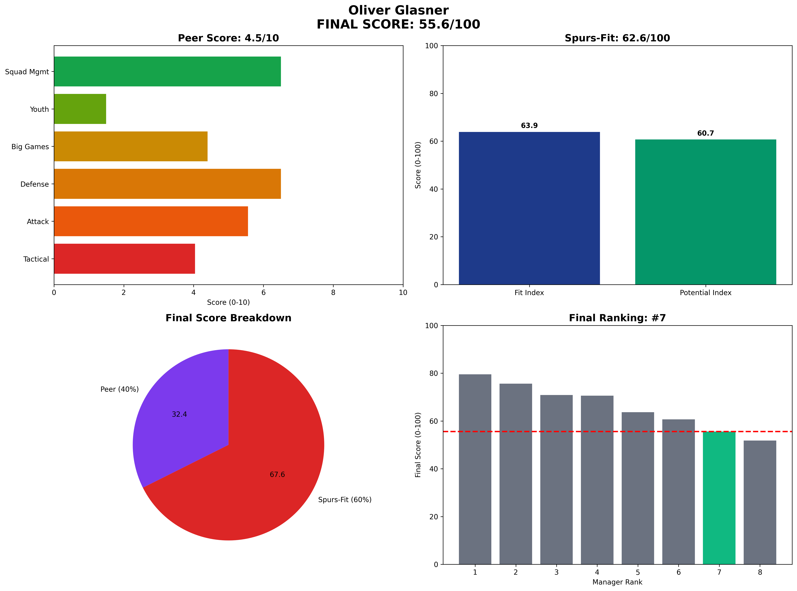

Oliver Glasner - Manager Analysis Report
44.1/100

Rank #7 of 8
The Quick-Fix Specialist
Peer Analysis
4.3/10
Spurs-Fit
45.0/100
Oliver Glasner • Final Score 44.1/100
Executive Summary
55.6
Final Score / 100
Rank: #7 of 8
Oliver Glasner represents the quick-fix specialist with fundamental misalignment
Visual Profile
Comprehensive radar chart showing Glasner's unified final scoring breakdown. His #7 ranking (55.6/100) reflects short-term thinking that conflicts with Spurs long-term development requirements.
Unified Final Scoring Breakdown
Peer Analysis (40% of Final Score): 4.5/10
- Peer Ranking: #7 of 8
- Tactical Style: 4.0/10
- Attacking Potency: 5.6/10
- Defensive Solidity: 6.5/10
- Big Game Performance: 4.4/10
- Youth Development: 1.5/10
- Squad Management: 6.5/10
Spurs-Fit Analysis (60% of Final Score): 62.6/100
Fit Index (60% of Spurs-Fit): 63.9/100
- Front-Foot Play Alignment: ⚠️ Concern
- Youth Development Focus: ❌ Weak
- Talent Inflation Capability: ⚠️ Concern
- Big Game Mentality: ⚠️ Concern
Potential Index (40% of Spurs-Fit): 60.7/100
- Age Factor: ⚠️ Concern (Age 49)
- 3-Year Performance Trend: ✅ Strong
- Resource Leverage: ✅ Strong
- Temperament: ✅ Strong
Key Performance Indicators
Tactical Metrics
- PPDA: 11.8 (lower = more aggressive)
- OPPDA: 15.8 (higher = forces opponent pressure)
- High Press Regains/90: 7.2
Financial Profile
- Net Spend: £40M
- Squad Value Change: £40M
- Transfer Efficiency: Good
Squad Development
- U23 Minutes %: 4%
- Academy Debuts: 2
- Player Availability: 88%
Strategic Assessment
Strengths
• Strong big game performance • Crystal Palace rescue achievement • Knockout tournament success • Age factor reasonable
Concerns
• Minimal youth development • Poor long-term vision scores • Limited Premier League sample • Tactical inflexibility
Spurs Fit Analysis
Short-term thinking conflicts with Spurs long-term development requirements.
Recommendation
**NOT RECOMMENDED** - Philosophy misalignment with Spurs model.
Analysis based on 2025-06-07 Methodology: 40% Peer-Normalized Analysis + 60% Spurs-Specific Fit Model